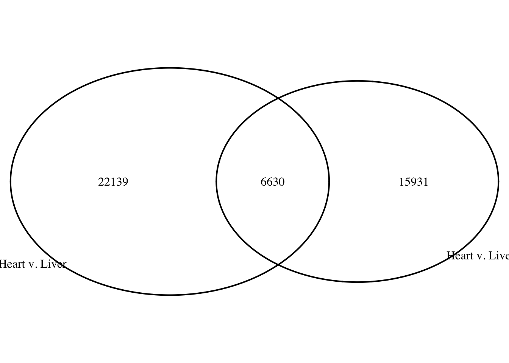

How often is a tDMR in one species, a tDMR in another species?
# Import libraries
library("ggplot2")
library("VennDiagram")Loading required package: gridLoading required package: futile.loggerlibrary(plyr)
library("bedr")
######################
#### bedr v1.0.4 ####
######################
checking binary availability...
* Checking path for bedtools... PASS
/usr/local/bin/bedtools
* Checking path for bedops... FAIL
* Checking path for tabix... FAIL
tests and examples will be skipped on R CMD check if binaries are missing# Import the data
# Human tDMRs
humans_heart_kidney_DMRs <- read.delim("../data/humans_heart_kidney_DMRs.txt")
humans_heart_liver_DMRs <- read.delim("../data/humans_heart_liver_DMRs.txt")
humans_heart_lung_DMRs <- read.delim("../data/humans_heart_lung_DMRs.txt")
humans_liver_lung_DMRs <- read.delim("../data/humans_liver_lung_DMRs.txt")
humans_liver_kidney_DMRs <- read.delim("../data/humans_liver_kidney_DMRs.txt")
humans_lung_kidney_DMRs <- read.delim("../data/humans_lung_kidney_DMRs.txt")
levels(factor(humans_lung_kidney_DMRs[,1])) [1] "chr1" "chr10" "chr11" "chr12" "chr13" "chr14" "chr15" "chr16"
[9] "chr17" "chr18" "chr19" "chr2" "chr20" "chr21" "chr22" "chr3"
[17] "chr4" "chr5" "chr6" "chr7" "chr8" "chr9" "chrX" count(humans_lung_kidney_DMRs[,1]) x freq
1 chr1 1486
2 chr10 974
3 chr11 777
4 chr12 836
5 chr13 446
6 chr14 516
7 chr15 549
8 chr16 785
9 chr17 852
10 chr18 484
11 chr19 647
12 chr2 1280
13 chr20 506
14 chr21 284
15 chr22 412
16 chr3 765
17 chr4 746
18 chr5 799
19 chr6 850
20 chr7 992
21 chr8 777
22 chr9 758
23 chrX 158# Chimp tDMRs
chimps_heart_kidney_DMRs <- read.delim("../data/chimps_heart_kidney_DMRs.txt")
chimps_heart_liver_DMRs <- read.delim("../data/chimps_heart_liver_DMRs.txt")
chimps_heart_lung_DMRs <- read.delim("../data/chimps_heart_lung_DMRs.txt")
chimps_liver_lung_DMRs <- read.delim("../data/chimps_liver_lung_DMRs.txt")
chimps_liver_kidney_DMRs <- read.delim("../data/chimps_liver_kidney_DMRs.txt")
chimps_lung_kidney_DMRs <- read.delim("../data/chimps_lung_kidney_DMRs.txt")
levels(factor(chimps_lung_kidney_DMRs[,1])) [1] "chr1" "chr10"
[3] "chr11" "chr11_gl000202_random"
[5] "chr12" "chr13"
[7] "chr14" "chr15"
[9] "chr16" "chr17"
[11] "chr18" "chr19"
[13] "chr2" "chr20"
[15] "chr21" "chr22"
[17] "chr3" "chr4"
[19] "chr5" "chr6"
[21] "chr7" "chr8"
[23] "chr9" "chrX" count(chimps_lung_kidney_DMRs[,1]) x freq
1 chr1 1021
2 chr10 697
3 chr11 592
4 chr11_gl000202_random 1
5 chr12 621
6 chr13 327
7 chr14 408
8 chr15 396
9 chr16 528
10 chr17 587
11 chr18 348
12 chr19 375
13 chr2 1026
14 chr20 353
15 chr21 199
16 chr22 272
17 chr3 627
18 chr4 662
19 chr5 651
20 chr6 692
21 chr7 627
22 chr8 542
23 chr9 525
24 chrX 16# Rhesus tDMRs
rhesus_heart_kidney_DMRs <- read.delim("../data/rhesus_heart_kidney_DMRs.txt")
rhesus_heart_liver_DMRs <- read.delim("../data/rhesus_heart_liver_DMRs.txt")
rhesus_heart_lung_DMRs <- read.delim("../data/rhesus_heart_lung_DMRs.txt")
rhesus_liver_lung_DMRs <- read.delim("../data/rhesus_liver_lung_DMRs.txt")
rhesus_liver_kidney_DMRs <- read.delim("../data/rhesus_liver_kidney_DMRs.txt")
rhesus_lung_kidney_DMRs <- read.delim("../data/rhesus_lung_kidney_DMRs.txt")
levels(factor(rhesus_heart_kidney_DMRs[,1])) [1] "chr1" "chr10"
[3] "chr11" "chr11_gl000202_random"
[5] "chr12" "chr13"
[7] "chr14" "chr15"
[9] "chr16" "chr17"
[11] "chr17_gl000204_random" "chr18"
[13] "chr19" "chr2"
[15] "chr20" "chr21"
[17] "chr22" "chr3"
[19] "chr4" "chr5"
[21] "chr6" "chr7"
[23] "chr8" "chr9"
[25] "chrX" count(rhesus_lung_kidney_DMRs[,1]) x freq
1 chr1 1391
2 chr10 929
3 chr11 863
4 chr12 799
5 chr13 435
6 chr14 519
7 chr15 499
8 chr16 821
9 chr17 944
10 chr17_gl000204_random 1
11 chr18 412
12 chr19 655
13 chr2 1180
14 chr20 543
15 chr21 252
16 chr22 475
17 chr3 709
18 chr4 613
19 chr5 713
20 chr6 816
21 chr7 853
22 chr8 674
23 chr9 794
24 chrX 24# columns to pull
pull_col <- c(1:3, 16)
# make bed style format
humans_heart_liver_DMRs_bed <- humans_heart_liver_DMRs[,pull_col]
# Get DMRs on the autosomal chromosomes only
humans_heart_liver_DMRs_bed_noX <- humans_heart_liver_DMRs_bed[which(humans_heart_liver_DMRs_bed[,1] != "chrX"),]
humans_heart_liver_DMRs_bed_noX[,1] <- as.character(humans_heart_liver_DMRs_bed_noX[,1])
humans_heart_liver_DMRs_bed_noX[,2] <- as.integer(humans_heart_liver_DMRs_bed_noX[,2])
humans_heart_liver_DMRs_bed_noX[,3] <- as.integer(humans_heart_liver_DMRs_bed_noX[,3])
summary(humans_heart_liver_DMRs_bed_noX[,3] - humans_heart_liver_DMRs_bed_noX[,2]) Min. 1st Qu. Median Mean 3rd Qu. Max.
5.0 255.0 473.0 584.5 795.0 4797.0 sort_humans_heart_liver_DMRs_bed <- bedr.sort.region(humans_heart_liver_DMRs_bed_noX)SORTING
VALIDATE REGIONS
* Checking input type... PASS
Input is in bed format
* Check if index is a string... PASS
* Check index pattern... PASS
* Check for missing values... PASS
* Check for larger start position... PASS.
* Check if zero based... PASS
* Overlapping regions can cause unexpected results.# make bed style format
humans_heart_lung_DMRs_bed <- chimps_heart_liver_DMRs[,pull_col]
humans_heart_lung_DMRs_bed_noX <- humans_heart_lung_DMRs_bed[which(humans_heart_lung_DMRs_bed[,1] != "chrX"),]
humans_heart_lung_DMRs_bed_noX[,1] <- as.character(humans_heart_lung_DMRs_bed_noX[,1])
humans_heart_lung_DMRs_bed_noX[,2] <- as.integer(humans_heart_lung_DMRs_bed_noX[,2])
humans_heart_lung_DMRs_bed_noX[,3] <- as.integer(humans_heart_lung_DMRs_bed_noX[,3])
sort_humans_heart_lung_DMRs_bed <- bedr.sort.region(humans_heart_lung_DMRs_bed_noX, check.chr=FALSE)SORTING
VALIDATE REGIONS
* Checking input type... PASS
Input is in bed format
* Check if index is a string... PASS
* Check index pattern... PASS
* Check for missing values... PASS
* Check for larger start position... PASS.
* Check if zero based... PASS
* Overlapping regions can cause unexpected results.summary(humans_heart_lung_DMRs_bed_noX[,3] - humans_heart_lung_DMRs_bed_noX[,2]) Min. 1st Qu. Median Mean 3rd Qu. Max.
5.0 266.0 498.0 617.6 849.0 4950.0 heart_lung <- bedr(input = list(a = sort_humans_heart_liver_DMRs_bed, b = sort_humans_heart_lung_DMRs_bed), method = "intersect", params = "-wao -f 0.5 -F 0.5", check.chr = FALSE) * Processing input (1): a
CONVERT TO BED
* Checking input type... PASS
Input is in bed format
VALIDATE REGIONS
* Check if index is a string... PASS
* Check index pattern... PASS
* Check for missing values... PASS
* Check for larger start position... PASS.
* Check if zero based... PASS
* Checking sort order... PASS
* Checking for overlapping 'contiguous' regions... PASS
* Processing input (2): b
CONVERT TO BED
* Checking input type... PASS
Input is in bed format
VALIDATE REGIONS
* Check if index is a string... PASS
* Check index pattern... PASS
* Check for missing values... PASS
* Check for larger start position... PASS.
* Check if zero based... PASS
* Checking sort order... PASS
* Checking for overlapping 'contiguous' regions... PASS
bedtools intersect -a /var/folders/rf/qrcw6ncj05z1pc_pq9xzw3540000gn/T//Rtmp6mLwti/a_3ee42c345a50.bed -b /var/folders/rf/qrcw6ncj05z1pc_pq9xzw3540000gn/T//Rtmp6mLwti/b_3ee455a50016.bed -wao -f 0.5 -F 0.5summary(heart_lung[,3] - heart_lung[,2]) Min. 1st Qu. Median Mean 3rd Qu. Max.
5.0 255.0 473.0 584.5 795.0 4797.0 summary(as.integer(heart_lung[,9])) Min. 1st Qu. Median Mean 3rd Qu. Max.
0 0 0 202 274 4413 summary(as.integer(heart_lung[,9]) > 0) Mode FALSE TRUE
logical 15931 6630 lung_heart <- bedr(input = list(a = sort_humans_heart_lung_DMRs_bed, b = sort_humans_heart_liver_DMRs_bed), method = "intersect", params = "-wao -f 0.5 -F 0.5", check.chr = FALSE) * Processing input (1): a
CONVERT TO BED
* Checking input type... PASS
Input is in bed format
VALIDATE REGIONS
* Check if index is a string... PASS
* Check index pattern... PASS
* Check for missing values... PASS
* Check for larger start position... PASS.
* Check if zero based... PASS
* Checking sort order... PASS
* Checking for overlapping 'contiguous' regions... PASS
* Processing input (2): b
CONVERT TO BED
* Checking input type... PASS
Input is in bed format
VALIDATE REGIONS
* Check if index is a string... PASS
* Check index pattern... PASS
* Check for missing values... PASS
* Check for larger start position... PASS.
* Check if zero based... PASS
* Checking sort order... PASS
* Checking for overlapping 'contiguous' regions... PASS
bedtools intersect -a /var/folders/rf/qrcw6ncj05z1pc_pq9xzw3540000gn/T//Rtmp6mLwti/a_3ee455c8044.bed -b /var/folders/rf/qrcw6ncj05z1pc_pq9xzw3540000gn/T//Rtmp6mLwti/b_3ee4663f7b53.bed -wao -f 0.5 -F 0.5summary(as.integer(lung_heart[,9])) Min. 1st Qu. Median Mean 3rd Qu. Max.
0.0 0.0 0.0 158.4 0.0 4413.0 summary(as.integer(lung_heart[,9]) > 0) Mode FALSE TRUE
logical 22139 6630 # Make a Venn diagram based on the results
summary(as.integer(heart_lung[,9]) > 0) Mode FALSE TRUE
logical 15931 6630 summary(as.integer(lung_heart[,9]) > 0) Mode FALSE TRUE
logical 22139 6630 grid.newpage()
draw.pairwise.venn(area1 = 22561, area2 = 14208, cross.area = 3858, category = c("Heart v. Liver", "Heart v. Lung"))
(polygon[GRID.polygon.1], polygon[GRID.polygon.2], polygon[GRID.polygon.3], polygon[GRID.polygon.4], text[GRID.text.5], text[GRID.text.6], text[GRID.text.7], text[GRID.text.8], text[GRID.text.9]) # Find out how many are in the same direction
heart_lung_subset <- heart_lung[which(heart_lung[,9] > 0) , ]
summary(heart_lung_subset[,4] == heart_lung_subset[,8]) Mode FALSE TRUE
logical 4 6626